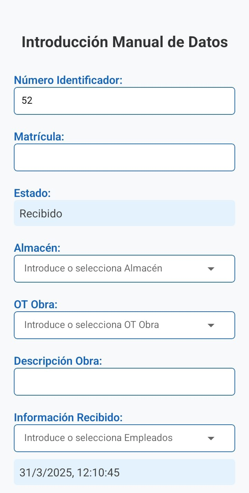
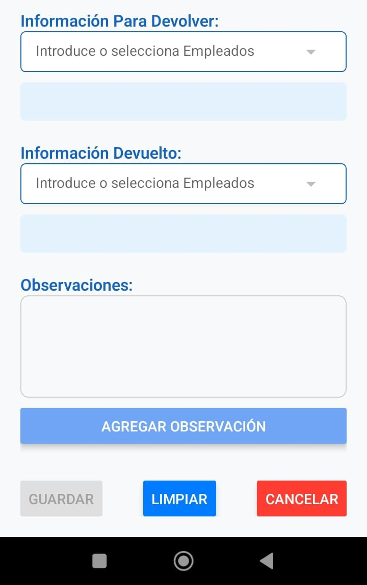

Introduces la matricula en su campo le das al boton con forma de Lupa,
busca si esa matricula existe o no.
Introducir o modificar bobinas


Si la bobina ya existe: se cargarán automáticamente los datos guardados previamente.
Solo se podrán modificar los campos habilitados según el estado actual:
Para Devolver: se podrán editar los campos Información Para Devolver y Observaciones.
Devuelto: se podrán editar los campos Información Devuelto y Observaciones.
El campo Observaciones siempre estará disponible para modificaciones, sin importar el estado.
Si la bobina no existe: se introducirán los datos desde cero, basados en el código QR escaneado.
Se podrán rellenar todos los campos correspondientes al estado Recibido, excepto los reservados para estados posteriores.
Botón Guardar y Botón Cancelar
El botón Guardar guarda de forma definitiva la información introducida.
Hasta que se pulse este botón, los datos no se almacenan.
El botón Cancelar descarta los cambios y vuelve a la pantalla anterior sin guardar nada.